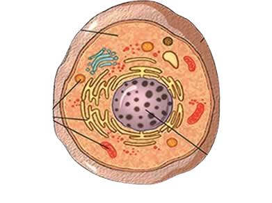
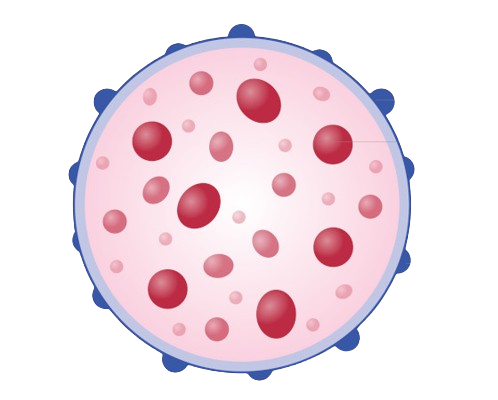
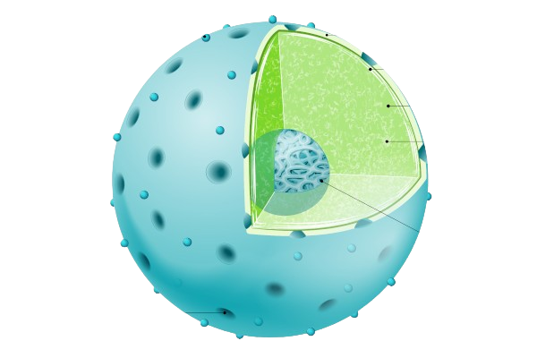
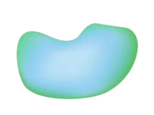

Membrana plasmática
A membrana plasmática é uma pelicula que envolve a célula e regula tudo o que entra e sai da célula

Citoplasma
O citoplasma é a parte da célula que fica entre a membrana e o núcleo Nele há um material gelatinoso, chamado citosol, onde várias organelas estão mergulhadas
Ribossomo
Os ribossomos fabricam proteínas, uma substância muito importante para a formação das células de todos os seres vivos São pequenos grãos que podem estar espalhados pelo citoplasma ou grudados às membranas do reticulo endoplasmático rugoso

Reticulo endoplasmatico rugoso
O reticulo endoplasmática rugoso (RER) é uma rede de pequenos canais e bolsas que forma uma estrutura semelhante a um labirinto dentro da célula, sua função é produzir e transportar proteinas E chamado de "rugoso" pois possui ribossomos aderidos às membranas

Reticulo endoplasmatico liso
O reticulo endoplasmático liso (REL) produz e transporta lipideos Não possui ribossomos aderidos às membranas

Complexo de golgi
O complexo de golgi é um conjunto de bolsas que armazenam proteínas que serão transferidas para fora da célula As proteinas são fabricadas pelos ribossomos grudados ao RER depois levados ao complexo golgiense, onde ficam armazenadas até serem lançadas para fora da célula
Mitocondria
A mitocondria é a organela encarregada de extrair energia dos nutrientes utilizando o gås oxigênio A célula usa essa energia para realizar as suas atividades

Lisossomos
Os lisossomos são pequenos "pacotes de enzimas" que atuam da digestão celular Enzimas são substâncias que facilitam as reações químicas
Centriolos
Os centriolos são estruturas celulares que auxiliam na divisão celular

Núcleo e Nucléolo
O núcleo é o centro de controle da célula, formado por uma membrana chamada carioteca, onde é armazenado o material genético
O nucléolo situa-se no interior do núcleo, formado principalmente por RNA e proteinas

Vacuolo
O vacuolo é uma cavidade que armazena água e sais minerais e é responsável por diversas funções como controlar a entrada e saida de água por osmorregulação
Cloroplasto
O cloroplasto é uma organela de coloração verde que armazena clorofila, responsável por realizar a fotossíntese

Parede celular do vegetal
A parede celular está presente em células vegetais, bactérias e fungos Envolve a membrana celular e fornece à célula suporte estrutural e proteção